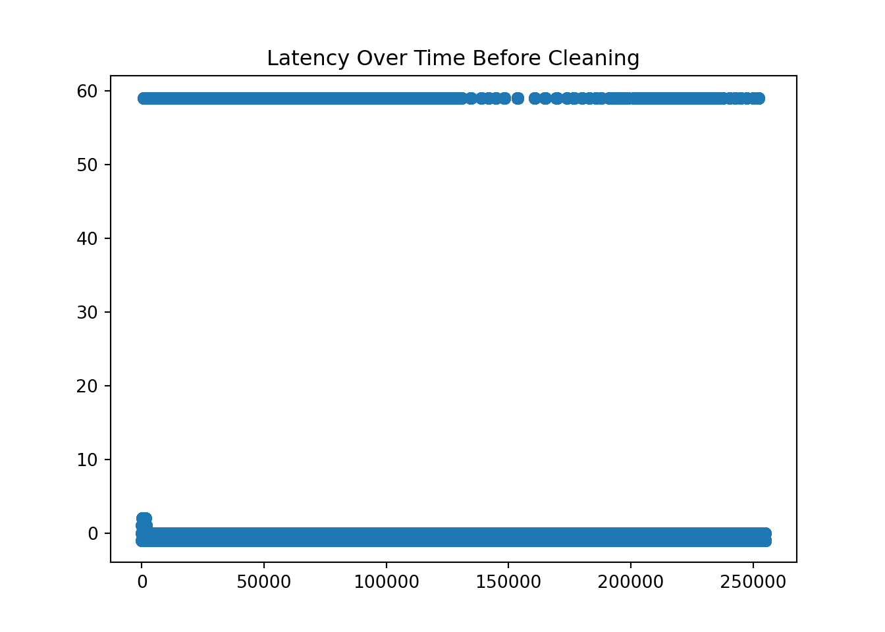
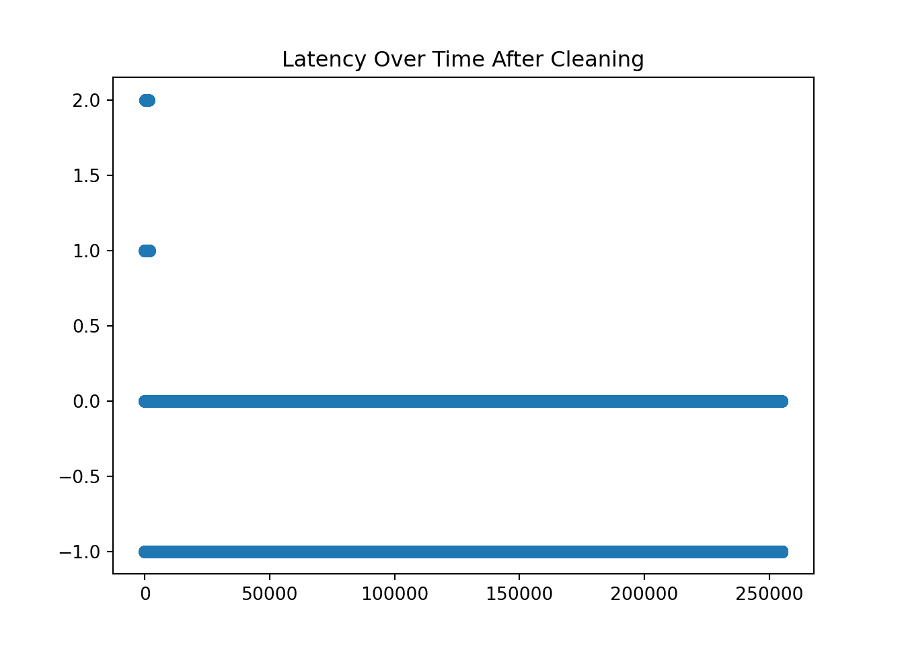
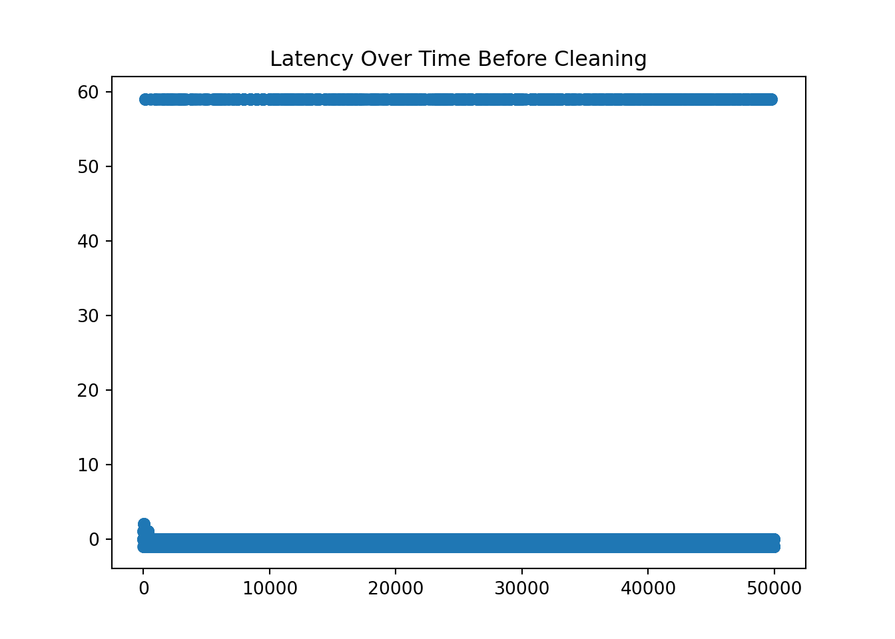
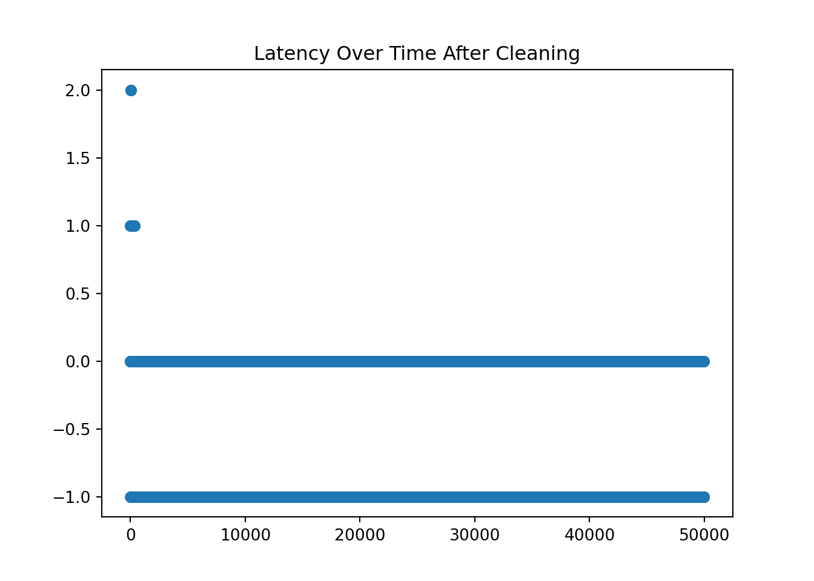

Note: 이 페이지는 키움 API를 통해 Real Time Tick Data를 받아온 후 데이터를 클리닝 하는 과정을 보여주고 있습니다. 오류 및 문의사항은 metrics@kakao.com 으로 메일주시면 감사하겠습니다
데이터 자체에 대한 질문과 데이터 제공에 관한 문의는 000 으로 메일 주시면 감사하겠습니다
R code 블럭과 Python code 블럭은 다음과 같이 색깔로 구분하겠습니다. 결과창은 동일하게 Ivory 색 블럭으로 표시됩니다.
# "이것은 R 코드 입니다."# "이것은 Python 코드 입니다."Package
library(dplyr)
library(tidyverse)
library(DT)
library(reticulate) # Python
#py_install(packages = "matplotlib")
#py_install(packages = "pandas")
#py_install(packages = 'dfply')
options(scipen=999)
options(max.print = 99999999)
options(digits=10)Import Data
- Check NA
wd = "G:/공유 드라이브/Project_TBD/Stock_Data/real_time/kiwoom_stocks/2021-01-14"
wd2 = "/Volumes/GoogleDrive/공유 드라이브/Project_TBD/Stock_Data/real_time/kiwoom_stocks/2021-01-18"
fn = list.files(path = wd2,
pattern = '.*stocks_trade.*\\.csv') # 마지막 30분 틱데이터 가지고오기
path = paste(wd2,fn[1:4],sep = '/')
# data = readr::read_csv(file = path,
# col_names = c('code','trade_date','timestamp','price','open','high','low',
# 'size','cum_size','ask1','bid1'))
tbl =
list.files(path = wd2, pattern = '.*stocks_trade.*\\.csv') %>%
map_df(~readr::read_csv(paste(wd2,.,sep = '/'),
col_names = c('code','trade_date','timestamp','price','open','high','low',
'size','cum_size','ask1','bid1') ))
sum(is.na(tbl))## [1] 0import numpy as np
import matplotlib.pyplot as plt
import pandas as pd
from datetime import datetime, timedelta
#py_install(packages = "matplotlib")
#py_install(packages = "pandas")
pd.options.display.float_format = '{:.4f}'.format
pd.set_option('display.max_rows', 100)
df_py = r.tbl
df_py.head()## code trade_date timestamp ... cum_size ask1 bid1
## 0 000990 100031.0000 20210118100030.5742 ... 2389083.0000 64300.0000 64200.0000
## 1 001360 100031.0000 20210118100030.7305 ... 3365481.0000 9180.0000 9170.0000
## 2 001510 100031.0000 20210118100030.7461 ... 4455526.0000 907.0000 906.0000
## 3 003490 100031.0000 20210118100030.7773 ... 1538419.0000 31650.0000 31600.0000
## 4 002630 100031.0000 20210118100030.8320 ... 23354062.0000 1860.0000 1855.0000
##
## [5 rows x 11 columns]Contents
Samsung Stock
- KOSPI Code for Samsung Electronics is ‘005930’
ss = df_py[df_py.code == '005930'].reset_index(drop=True)
ss.shape## (255036, 11)1. Use time object in python
Delete rows where “second” does not lie between 0 and 59.
Substring the timstamp to get each time component.
ss = ss[ss['timestamp'].apply(lambda x: int(str(int(x*1000000))[12:14])) < 60 ]
ss = ss.assign( microsecond = ss['timestamp'].apply(lambda x: str(int(x*1000000))[14:20]),
second = ss['timestamp'].apply(lambda x: str(int(x*1000000))[12:14]),
minute = ss['timestamp'].apply(lambda x: str(int(x*1000000))[10:12]),
hour = ss['timestamp'].apply(lambda x: str(int(x*1000000))[8:10]),
day = ss['timestamp'].apply(lambda x: str(int(x*1000000))[6:8]),
month = ss['timestamp'].apply(lambda x: str(int(x*1000000))[4:6]),
year = ss['timestamp'].apply(lambda x: str(int(x*1000000))[0:4]),
kw_time = ss['trade_date'].apply(lambda x: str(int(x))))
ss.head()## code trade_date timestamp price ... day month year kw_time
## 0 005930 100031.0000 20210118100031.0391 87200.0000 ... 18 01 2021 100031
## 1 005930 100032.0000 20210118100031.3945 87100.0000 ... 18 01 2021 100032
## 2 005930 100032.0000 20210118100031.4062 87100.0000 ... 18 01 2021 100032
## 3 005930 100032.0000 20210118100031.4570 87100.0000 ... 18 01 2021 100032
## 4 005930 100032.0000 20210118100031.4648 87100.0000 ... 18 01 2021 100032
##
## [5 rows x 19 columns]- Transform data type to str to use substring to make the format like “%Y-%m-%d %H:%M:%S.%f”
- We calculate the latency by subtracting ‘trade_date’ from the ‘timestamp’
ss['time'] = ss.apply(lambda x: datetime(
year = int(x['year']),
month = int(x['month']),
day = int(x['day']),
hour = int(x['hour']),
minute = int(x['minute']),
second = int(x['second']),
microsecond = int(x['microsecond'])), #.strftime("%H:%M:%S.%f")[:-3],
axis=1)
ss.head(10)## code trade_date ... kw_time time
## 0 005930 100031.0000 ... 100031 2021-01-18 10:00:31.037440
## 1 005930 100032.0000 ... 100032 2021-01-18 10:00:31.393792
## 2 005930 100032.0000 ... 100032 2021-01-18 10:00:31.406080
## 3 005930 100032.0000 ... 100032 2021-01-18 10:00:31.455232
## 4 005930 100032.0000 ... 100032 2021-01-18 10:00:31.463424
## 5 005930 100032.0000 ... 100032 2021-01-18 10:00:31.803392
## 6 005930 100032.0000 ... 100032 2021-01-18 10:00:31.950848
## 7 005930 100032.0000 ... 100032 2021-01-18 10:00:32.462848
## 8 005930 100032.0000 ... 100032 2021-01-18 10:00:32.536576
## 9 005930 100032.0000 ... 100032 2021-01-18 10:00:32.548864
##
## [10 rows x 20 columns]2. Calculate latency and clean it [레이턴시 계산 및 정리]
- Calculate the latency by subtracting the time provided by Kiwoom dataset and self-recorded time at the moment of processing the data delivered through the Kiwoom API.
ss['kwtime'] = ss.apply(lambda x: datetime(year = int(x['year']),
month = int(x['month']),
day = int(x['day']),
hour = int(x['kw_time'][0:2]),
minute = int(x['kw_time'][2:4]),
second = int(x['kw_time'][4:6])),
axis = 1
)
ss['latency'] = ss.apply(lambda x: x['time'].second - x['kwtime'].second,
axis =1
)
ss1 = ss[['time', 'kwtime', 'hour', 'minute', 'second', 'price','size','ask1','bid1','latency']]
ss1.head(10)## time kwtime ... bid1 latency
## 0 2021-01-18 10:00:31.037440 2021-01-18 10:00:31 ... 87100.0000 0
## 1 2021-01-18 10:00:31.393792 2021-01-18 10:00:32 ... 87000.0000 -1
## 2 2021-01-18 10:00:31.406080 2021-01-18 10:00:32 ... 87000.0000 -1
## 3 2021-01-18 10:00:31.455232 2021-01-18 10:00:32 ... 87000.0000 -1
## 4 2021-01-18 10:00:31.463424 2021-01-18 10:00:32 ... 87000.0000 -1
## 5 2021-01-18 10:00:31.803392 2021-01-18 10:00:32 ... 87000.0000 -1
## 6 2021-01-18 10:00:31.950848 2021-01-18 10:00:32 ... 87000.0000 -1
## 7 2021-01-18 10:00:32.462848 2021-01-18 10:00:32 ... 87000.0000 0
## 8 2021-01-18 10:00:32.536576 2021-01-18 10:00:32 ... 87000.0000 0
## 9 2021-01-18 10:00:32.548864 2021-01-18 10:00:32 ... 87000.0000 0
##
## [10 rows x 10 columns]plt.scatter(ss1.reset_index().index, ss1.latency)
plt.title('Latency Over Time Before Cleaning')
print(ss1.latency.value_counts())## -1 194052
## 0 57420
## 59 3447
## 1 99
## 2 15
## Name: latency, dtype: int64print(ss1.latency.nsmallest(10))## 1 -1
## 2 -1
## 3 -1
## 4 -1
## 5 -1
## 6 -1
## 21 -1
## 22 -1
## 23 -1
## 24 -1
## Name: latency, dtype: int64print(ss1.latency.nlargest(10))## 705 59
## 706 59
## 707 59
## 708 59
## 709 59
## 710 59
## 711 59
## 716 59
## 717 59
## 724 59
## Name: latency, dtype: int64- Check the time where large discrepancy happened!
When latency is 59, it actually is 1 second difference. We can check it as in below.
ss1[ss1.latency == 59][['kwtime','hour','minute','second','latency']]## kwtime hour minute second latency
## 705 2021-01-18 10:02:00 10 01 59 59
## 706 2021-01-18 10:02:00 10 01 59 59
## 707 2021-01-18 10:02:00 10 01 59 59
## 708 2021-01-18 10:02:00 10 01 59 59
## 709 2021-01-18 10:02:00 10 01 59 59
## ... ... ... ... ... ...
## 252351 2021-01-18 15:19:00 15 18 59 59
## 252352 2021-01-18 15:19:00 15 18 59 59
## 252353 2021-01-18 15:19:00 15 18 59 59
## 252354 2021-01-18 15:19:00 15 18 59 59
## 252355 2021-01-18 15:19:00 15 18 59 59
##
## [3447 rows x 5 columns]ss1[ss1.latency == 2][['kwtime','hour','minute','second','latency']]## kwtime hour minute second latency
## 74 2021-01-18 10:01:17 10 01 19 2
## 99 2021-01-18 10:01:17 10 01 19 2
## 100 2021-01-18 10:01:17 10 01 19 2
## 102 2021-01-18 10:01:18 10 01 20 2
## 103 2021-01-18 10:01:17 10 01 19 2
## 104 2021-01-18 10:01:17 10 01 19 2
## 105 2021-01-18 10:01:18 10 01 20 2
## 114 2021-01-18 10:01:18 10 01 20 2
## 115 2021-01-18 10:01:18 10 01 20 2
## 116 2021-01-18 10:01:18 10 01 20 2
## 122 2021-01-18 10:01:19 10 01 21 2
## 1629 2021-01-18 10:06:06 10 06 08 2
## 1630 2021-01-18 10:06:06 10 06 08 2
## 1639 2021-01-18 10:06:06 10 06 08 2
## 1650 2021-01-18 10:06:07 10 06 09 259초는 -1초로 변경
When latency is 59, it actually is -1 as we have seen above.
ss2 = ss1.copy()
ss2.loc[ss1['latency']==59, 'latency'] = -1
plt.scatter(ss2.reset_index().index, ss2.latency)
plt.title('Latency Over Time After Cleaning')
Hyundai Car Stock
- KOSPI Code for Samsung Electronics is ‘005380’
ss = df_py[df_py.code == '005380'].reset_index(drop=True)
ss.shape## (49963, 11)1. Use time object in python
Delete rows where “second” does not lie between 0 and 59.
Substring the timstamp to get each time component.
ss = ss[ss['timestamp'].apply(lambda x: int(str(int(x*1000000))[12:14])) < 60 ]
ss = ss.assign( microsecond = ss['timestamp'].apply(lambda x: str(int(x*1000000))[14:20]),
second = ss['timestamp'].apply(lambda x: str(int(x*1000000))[12:14]),
minute = ss['timestamp'].apply(lambda x: str(int(x*1000000))[10:12]),
hour = ss['timestamp'].apply(lambda x: str(int(x*1000000))[8:10]),
day = ss['timestamp'].apply(lambda x: str(int(x*1000000))[6:8]),
month = ss['timestamp'].apply(lambda x: str(int(x*1000000))[4:6]),
year = ss['timestamp'].apply(lambda x: str(int(x*1000000))[0:4]),
kw_time = ss['trade_date'].apply(lambda x: str(int(x))))
ss.head()## code trade_date timestamp price ... day month year kw_time
## 0 005380 100031.0000 20210118100031.3086 244500.0000 ... 18 01 2021 100031
## 1 005380 100033.0000 20210118100034.1055 245000.0000 ... 18 01 2021 100033
## 2 005380 100031.0000 20210118100031.0000 245000.0000 ... 18 01 2021 100031
## 3 005380 100032.0000 20210118100032.1445 245000.0000 ... 18 01 2021 100032
## 4 005380 100032.0000 20210118100032.2031 245000.0000 ... 18 01 2021 100032
##
## [5 rows x 19 columns]- Transform data type to str to use substring to make the format like “%Y-%m-%d %H:%M:%S.%f”
- We calculate the latency by subtracting ‘trade_date’ from the ‘timestamp’
ss['time'] = ss.apply(lambda x: datetime(
year = int(x['year']),
month = int(x['month']),
day = int(x['day']),
hour = int(x['hour']),
minute = int(x['minute']),
second = int(x['second']),
microsecond = int(x['microsecond'])), #.strftime("%H:%M:%S.%f")[:-3],
axis=1)
ss.head(10)## code trade_date ... kw_time time
## 0 005380 100031.0000 ... 100031 2021-01-18 10:00:31.307776
## 1 005380 100033.0000 ... 100033 2021-01-18 10:00:34.105344
## 2 005380 100031.0000 ... 100031 2021-01-18 10:00:31.000576
## 3 005380 100032.0000 ... 100032 2021-01-18 10:00:32.143360
## 4 005380 100032.0000 ... 100032 2021-01-18 10:00:32.204800
## 5 005380 100033.0000 ... 100033 2021-01-18 10:00:33.564672
## 6 005380 100115.0000 ... 100115 2021-01-18 10:01:14.587648
## 7 005380 100115.0000 ... 100115 2021-01-18 10:01:15.775488
## 8 005380 100116.0000 ... 100116 2021-01-18 10:01:17.385216
## 9 005380 100115.0000 ... 100115 2021-01-18 10:01:14.595840
##
## [10 rows x 20 columns]2. Calculate latency and clean it [레이턴시 계산 및 정리]
- Calculate the latency by subtracting the time provided by Kiwoom dataset and self-recorded time at the moment of processing the data delivered through the Kiwoom API.
ss['kwtime'] = ss.apply(lambda x: datetime(year = int(x['year']),
month = int(x['month']),
day = int(x['day']),
hour = int(x['kw_time'][0:2]),
minute = int(x['kw_time'][2:4]),
second = int(x['kw_time'][4:6])),
axis = 1
)
ss['latency'] = ss.apply(lambda x: x['time'].second - x['kwtime'].second,
axis =1
)
ss1 = ss[['time', 'kwtime', 'hour', 'minute', 'second', 'price','size','ask1','bid1','latency']]
ss1.head(10)## time kwtime ... bid1 latency
## 0 2021-01-18 10:00:31.307776 2021-01-18 10:00:31 ... 244500.0000 0
## 1 2021-01-18 10:00:34.105344 2021-01-18 10:00:33 ... 244500.0000 1
## 2 2021-01-18 10:00:31.000576 2021-01-18 10:00:31 ... 244500.0000 0
## 3 2021-01-18 10:00:32.143360 2021-01-18 10:00:32 ... 244500.0000 0
## 4 2021-01-18 10:00:32.204800 2021-01-18 10:00:32 ... 244500.0000 0
## 5 2021-01-18 10:00:33.564672 2021-01-18 10:00:33 ... 244500.0000 0
## 6 2021-01-18 10:01:14.587648 2021-01-18 10:01:15 ... 244500.0000 -1
## 7 2021-01-18 10:01:15.775488 2021-01-18 10:01:15 ... 244500.0000 0
## 8 2021-01-18 10:01:17.385216 2021-01-18 10:01:16 ... 244500.0000 1
## 9 2021-01-18 10:01:14.595840 2021-01-18 10:01:15 ... 244500.0000 -1
##
## [10 rows x 10 columns]plt.scatter(ss1.reset_index().index, ss1.latency)
plt.title('Latency Over Time Before Cleaning')
print(ss1.latency.value_counts())## -1 36803
## 0 12435
## 59 703
## 1 18
## 2 4
## Name: latency, dtype: int64print(ss1.latency.nsmallest(10))## 6 -1
## 9 -1
## 10 -1
## 11 -1
## 12 -1
## 39 -1
## 40 -1
## 41 -1
## 46 -1
## 51 -1
## Name: latency, dtype: int64print(ss1.latency.nlargest(10))## 146 59
## 156 59
## 157 59
## 542 59
## 934 59
## 935 59
## 1114 59
## 1287 59
## 1585 59
## 1586 59
## Name: latency, dtype: int64- Check the time where large discrepancy happened!
When latency is 59, it actually is 1 second difference. We can check it as in below.
ss1[ss1.latency == 59][['kwtime','hour','minute','second','latency']]## kwtime hour minute second latency
## 146 2021-01-18 10:02:00 10 01 59 59
## 156 2021-01-18 10:02:00 10 01 59 59
## 157 2021-01-18 10:02:00 10 01 59 59
## 542 2021-01-18 10:07:00 10 06 59 59
## 934 2021-01-18 10:09:00 10 08 59 59
## ... ... ... ... ... ...
## 49543 2021-01-18 15:18:00 15 17 59 59
## 49544 2021-01-18 15:18:00 15 17 59 59
## 49736 2021-01-18 15:19:00 15 18 59 59
## 49739 2021-01-18 15:19:00 15 18 59 59
## 49741 2021-01-18 15:19:00 15 18 59 59
##
## [703 rows x 5 columns]ss1[ss1.latency == 2][['kwtime','hour','minute','second','latency']]## kwtime hour minute second latency
## 19 2021-01-18 10:01:17 10 01 19 2
## 21 2021-01-18 10:01:18 10 01 20 2
## 22 2021-01-18 10:01:17 10 01 19 2
## 24 2021-01-18 10:01:18 10 01 20 259초는 -1초로 변경
When latency is 59, it actually is -1 as we have seen above.
ss2 = ss1.copy()
ss2.loc[ss1['latency']==59, 'latency'] = -1
plt.scatter(ss2.reset_index().index, ss2.latency)
plt.title('Latency Over Time After Cleaning')
Source
- 데이터 provided by 00 Team